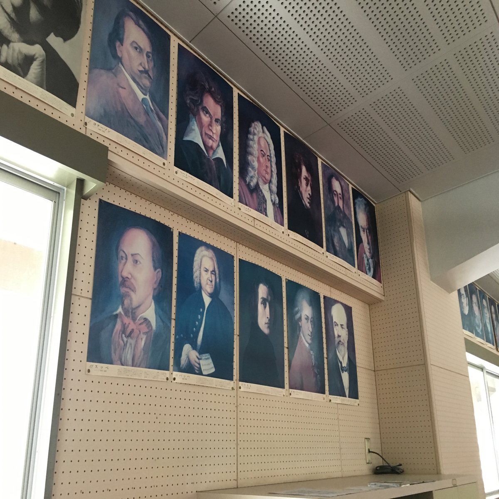

IG/FB 已上線 歡迎追蹤
提供免費怪談消息
歡迎來訊推薦怪談
日本其他縣市也有類似的傳說，在叫喚花子之後，從廁所裡會伸出血手、出現血手印、或是會出現三頭蜥蜴，甚至廁所樓層、男女廁叫喚法也不同；而要擊退花子的方法，據說只要拿出滿分的考卷給花子看，花子就會邊慘叫著消失。.
Go somewhere日本怖い話，詭異的怪談 半夜出現在家中的詭異女人 出差的哥哥命懸一線 趕到現場時 居然還碰到同一個恐怖女人 而且哥哥還要我到已過世五年的同學家去上香? 悬疑奇怪的事件 到底是發生了什麼.
Go somewhere說到人面魚以前台灣也曾盛行人面魚的傳說，時間點也與日本滿相近的，大約是從1994年開始流傳，當時有一群人在溪邊釣到一條吳郭魚，烤來吃之後，忽然聽見一個老女人的聲音說著：「魚肉好吃否？」 .
Go somewhere